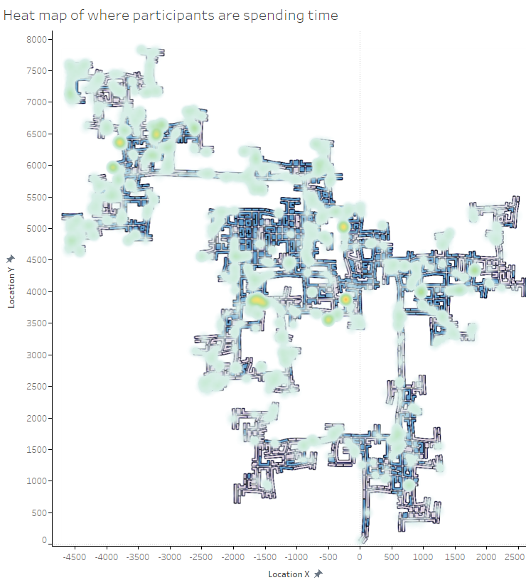
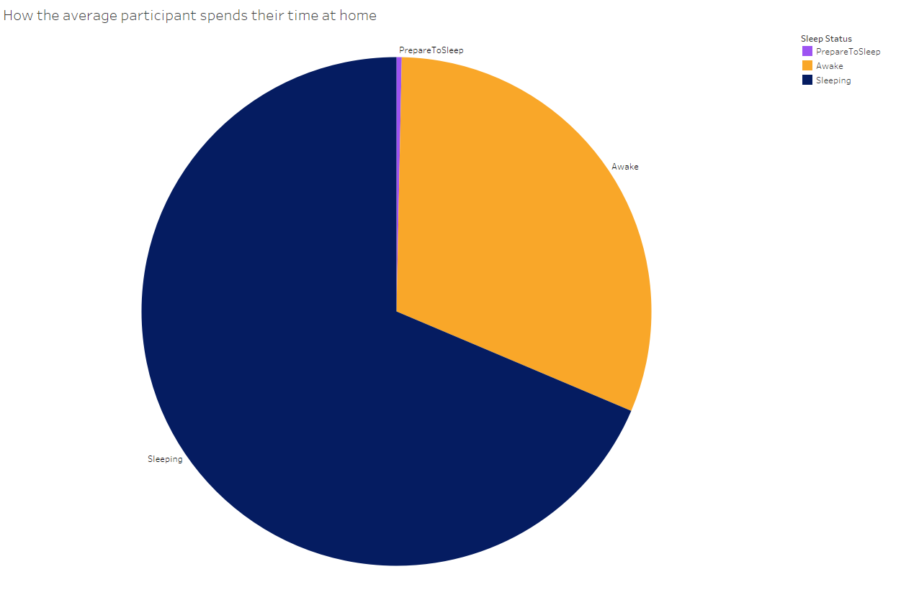
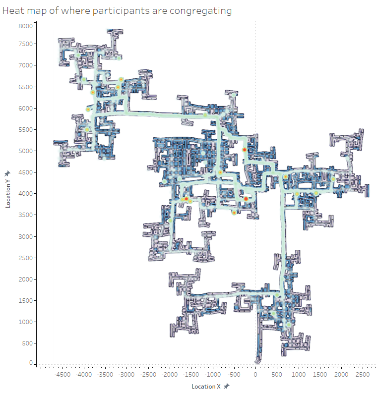
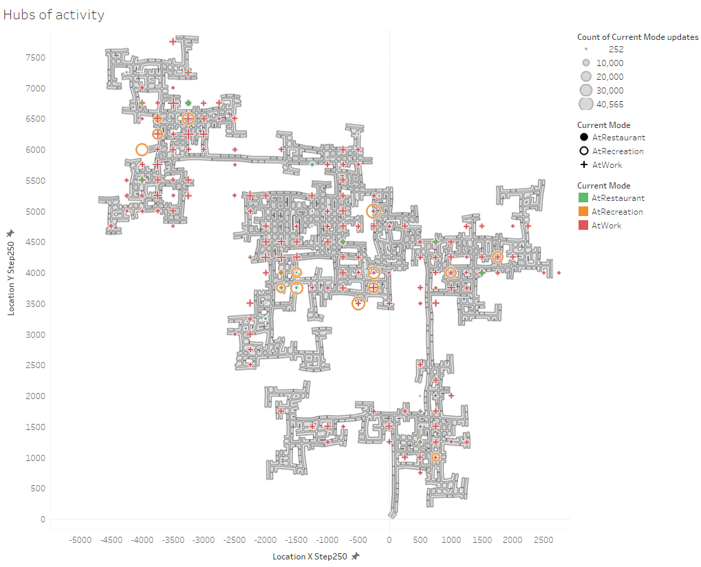
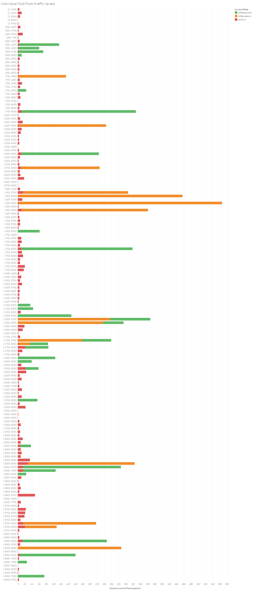
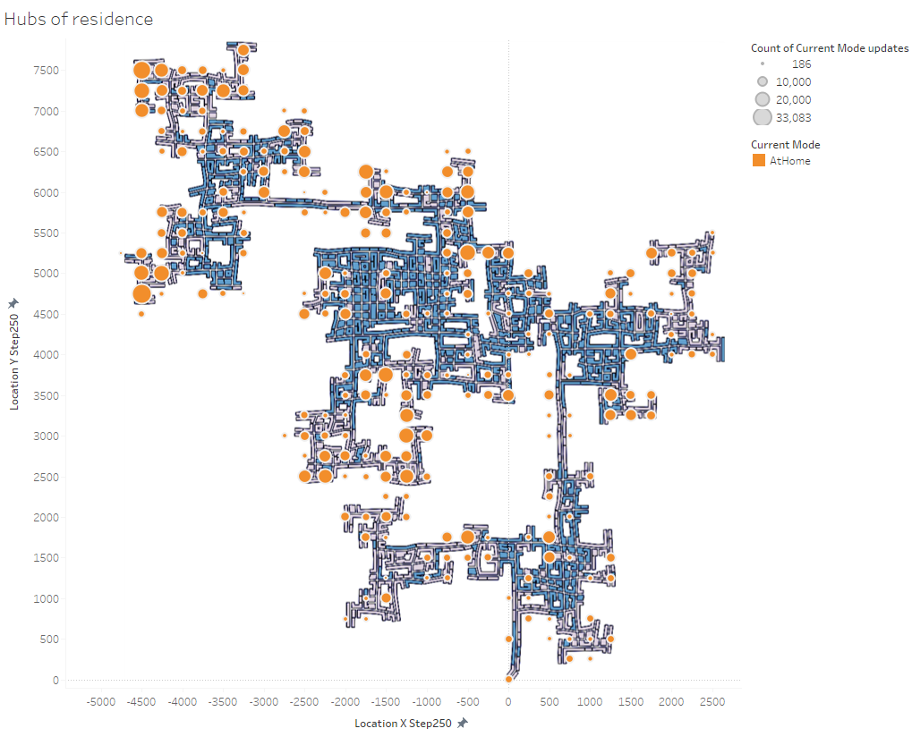
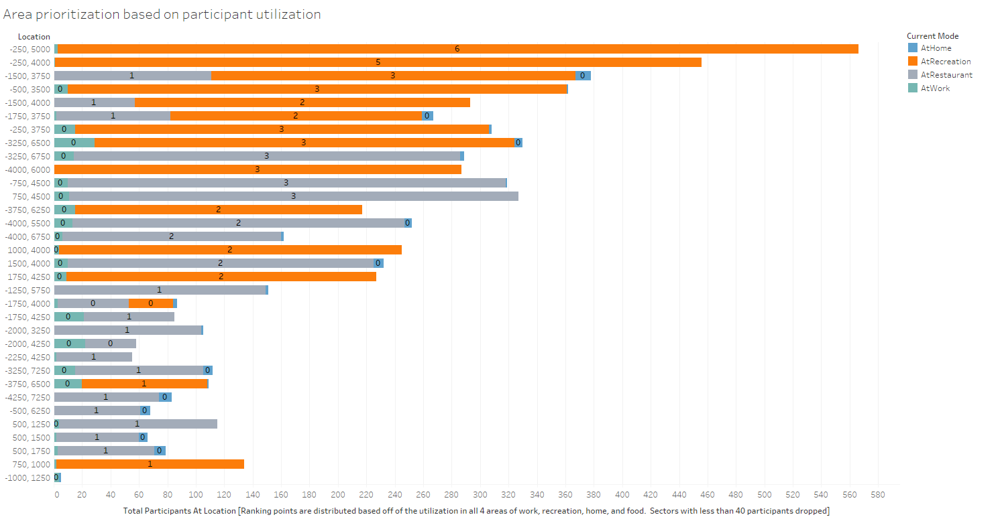
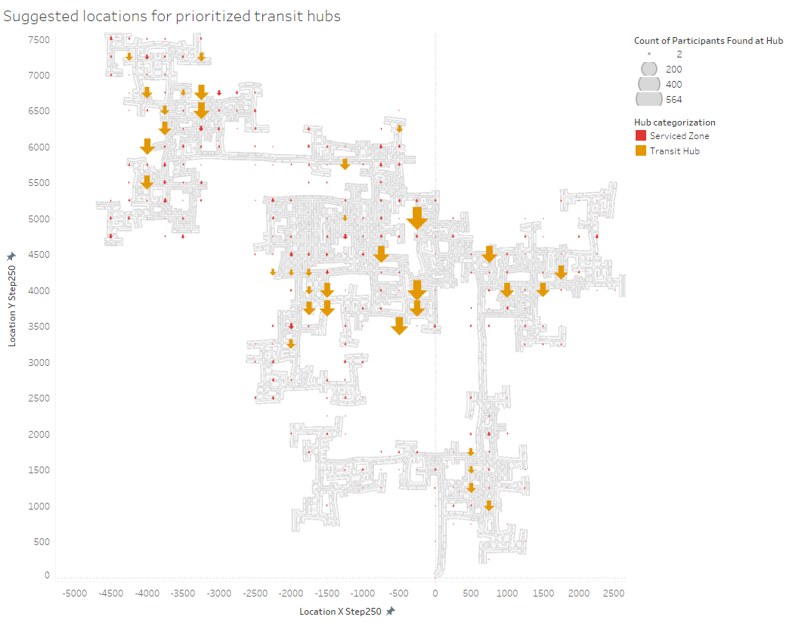

This was the initial attempt at investigating where hubs of activity were located. This initial attempt at identifying where the participants are spending their time used a count of the individual timestamps in both participant status logs and plotting those values into a density map overlaid on the map of the town. Unfortunately, it was found that density maps any sort of so in order to adhere to conventional understandings of heat maps.
What was found in this heat map was, in addition to the hot zones of local commercial zones, the heat map was also highlighting residential areas strongly.
Assignment 2: Exploratory Data Analysis
Kenneth Munk
Dataset
The dataset used is from the 2022 Vast Challenge. The data consists of a hypothetical set of volunteers from a hypothetical city that is in eventual need for revitalization.
The data is available online at:
This sample of the vast dataset
Which is pulled from:
The 2022 Vast Challenge
Initial Analysis Questions
- Q1: What areas of the town are most busy?
- Q2: Where are the primary corridors of travel?
- Q3: Where do people typically spend their time in the categories of work, eating, and recreation? Specific buildings are not necessary as the intent is to identify hubs of activity rather than popular destinations.
- Q4: Where are the participants distributed housing wise?
- Q5: Which blocks should be prioritized for transit hubs?
Discoveries & Insights
Areas of activity


In order to understand the importance and relationship of the time spent at home and it's associated mark on the time density map in the previous image, the time distribution at home was analyzed. The initial hypothesis was that the traditional person still goes to work outside of home and therefore primarily uses the location of home as a place of sleep primarily.
The near 75% distribution of time spent sleeping at home clearly supports this hypothesis. The key takeaway here was that there should really be a lesser priority placed on valuing home time distribution and more priority placed on places where people actively seek to spend time.

ENTER IMAGE CAPTION HERE.
Corridors of travel

ENTER IMAGE CAPTION HERE.
Hubs of activity

ENTER IMAGE CAPTION HERE.

ENTER IMAGE CAPTION HERE.
Hubs of residence

ENTER IMAGE CAPTION HERE.
ENTER IMAGE CAPTION HERE.
Zone prioritization

ENTER IMAGE CAPTION HERE.

ENTER IMAGE CAPTION HERE.
Summary
WRITE FINAL SUMMARY HERE.
Repository for this page
https://github.com/KenMunk/CSC173-01--EDA
Inspiration for the questions
https://www.reddit.com/r/fuckcars/